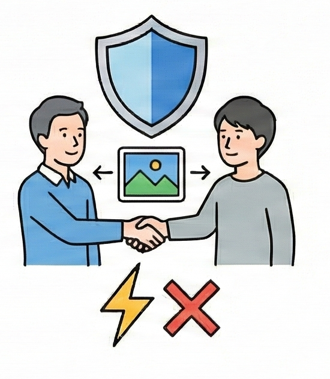
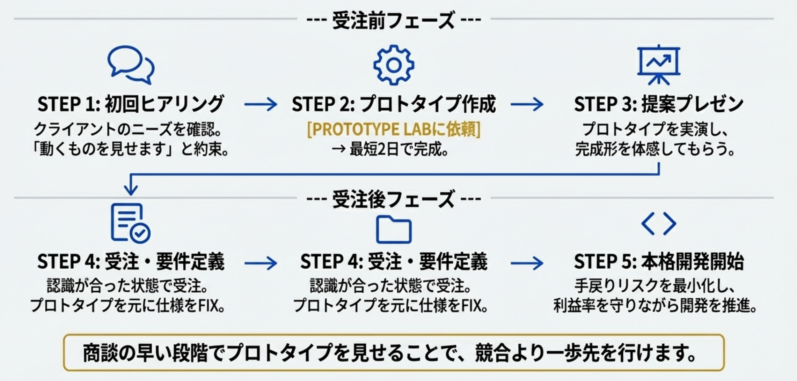

システム開発会社・SIer向け 月額制プロトタイピングサービス
提案書と見積書だけの営業では、もはや競合との差別化は困難です。
PROTOTYPE LABは、「動くもの」を営業プロセスに組み込むことで、
貴社の提案を次の次元へと引き上げます。
提案書だけの競合に「動くもの」で差をつけ、不毛な価格競争から脱却します。

開発着手前に完成イメージを顧客と共有し、「思っていたのと違う」という致命的なリスクを未然に防止します。
ヒアリングから最短48時間でプロトタイプを提示。顧客の熱量を逃さず掴み、成約率を劇的に向上させます。
システム営業の現場では、受注の前後を問わず、ビジネスの成長を阻害する根深い課題が潜んでいます。
これらは日々の業務に紛れ、根本的な対策が打たれにくい「見えない壁」として存在しますが、
放置すれば確実に企業の競争力と収益性を蝕んでいきます。
膨大な時間と労力をかけて作成した提案書と見積書。しかし、顧客にはその技術的な優位性や価値が十分に伝わりません。結果として、他社との比較は価格だけが基準となり、利益を削るだけの消耗戦に巻き込まれてしまいます。
要件定義書に記載された文字や図だけでは、顧客と開発者の間で描く完成イメージには必ずズレが生じます。この微妙な認識の齟齬が、顧客が本当に求めている本質的なニーズを見失わせ、プロジェクトの方向性を誤らせる原因となります。
開発が完了し、納品する段階になって初めて「思っていたのと違う」というギャップが発覚。この一言が、大規模な手戻りや追加開発の引き金となり、プロジェクトは炎上。納期遅延やコスト超過を招き、築き上げてきた信頼と本来得られるはずだった利益の両方を失います。
これらの課題は、個別の問題ではなく、相互に関連し合っています。
そして最終的には、「受注率の低下」「プロジェクトの炎上リスク」「クライアントからの信頼低下」という、
事業の根幹を揺るがす深刻な結果へと直結するのです。
しかし、これらの根深い課題を解決し、競合の一歩先を行くための
「新しいアプローチ」が存在します。
これまで述べてきた課題を打ち破る鍵、それが「プロトタイプ」の活用です。
これは単なる開発工程の一部ではありません。営業プロセスそのものを変革し、
受注の質と確率を劇的に向上させる戦略的な武器です。
| 従来の営業 📄 | プロトタイプ営業 💻 |
|---|---|
| 手段: 提案書 + 見積書 | 手段: 提案書 + 動くプロトタイプ |
| 顧客体験: 文字と図による「想像」 | 顧客体験: 実際に触れる「体験」 |
| 結果: 完成形が曖昧で、競合との差が不明確 | 結果: 完成形が明確で、技術力を実証 |
| 勝負の土俵: 価格で選ばれる | 勝負の土俵: 価値で選ばれる |
プロトタイプは、ビジネスに「二重の価値」をもたらします。
それは「受注率を上げる営業ツール」であり、同時に「炎上を防ぐ開発ツール」でもあるのです。
完成イメージをその場で共有することで、顧客の「本当に大丈夫か？」という不安を払拭し、深い納得感を生み出します。
決裁者にとって「動くもの」は最も具体的な判断材料です。「検討します」ではなく、その場で「Yes/No」を引き出す力を持ちます。
コンペで唯一プロトタイプを提示すれば、顧客から「この会社は本気度が違う」と評価され、案件に選ばれる確率が飛躍的に高まります。
仕様書の曖昧な記述を「動く正解」で補完し、開発者と顧客間の認識のズレを根本から解消。無駄な手戻りをなくします。
修正コストが最も低い「超上流工程」で問題を特定・修正できるため、開発終盤での予期せぬコスト増大を防ぎ、利益率を確保します。
「期待通り」の成果物を確実に納品することで、顧客満足度は最大化します。これは長期的な信頼関係の構築（LTV向上）に直結します。
| ターゲット | ユースケース | 活用によるメリット |
|---|---|---|
| 受託開発会社・SIer | 営業プレゼン支援 | 300万円以上のコンペで他社と差別化。動くデモで技術的信頼を獲得。 |
| スタートアップ・新規事業部 | 新規事業の検証 | 投資家ピッチや社内稟議でアイデアを可視化。低コストで市場性を早期判断。 |
| マーケティング部門 | 緊急のLP・フォーム制作 | イベントやキャンペーン用のページを、要件定義の手間を省き即座に公開。 |
| 営業部門 | 技術力の証明 | 新規開拓時に類似デモを見せ、言葉では伝わりにくい技術力を実証する武器に。 |
PROTOTYPE LABの優位性は、単なる技術力だけに支えられているわけではありません。
私たちの最大の強みは、自らが営業の最前線で実践し、磨き上げてきた
「受注に繋がる」生きたノウハウに基づいている点にあります。
私たちは机上の空論でサービスを構築したのではありません。自社の受託開発営業において、実際にプロトタイプを武器として活用し、顧客との合意形成を加速させ、成約率を大幅に向上させてきました。
「どのレベルの品質なら顧客は決断するのか」「どこを作り込めば信頼を得られるのか」といった、営業視点のリアルな知見こそが、私たちのサービスの核となっています。
地方におけるAI教育事業を通じて、これまで100本以上の多種多様なプロトタイプ開発を手がけてきました。これは単にAIツールを操作するだけの実績ではありません。
セキュリティや将来的な拡張性まで考慮した、プロのエンジニアによる実装力があるからこそ、単なる「動く絵」ではない、ビジネス検証に耐えうる高品質なプロトタイプを提供できるのです。
私たちの役割は、プロトタイプを作って終わりではありません。プロトタイプを活用して無事に受注が決まった案件を、そのままシームレスに本格開発フェーズへと移行できる体制を完備しています。
これにより、お客様は開発パートナーを改めて探す手間なく、スムーズにプロジェクトを推進できるという利便性と安心感を得られます。
プロトタイプの導入は、単なる理論上の空論ではありません。
実際に多くの企業が、測定可能で具体的なビジネスインパクトを創出しています。
ここでは、PROTOTYPE LABを導入した企業が達成した成果の一部をご紹介します。
解説：
提案書だけの競合他社に対し、「動くプロトタイプ」という明確な差別化要因を提示することで、コンペでの勝率が大幅にアップしました。
解説：
開発に着手する前に、動くプロトタイプを使って仕様の認識をクライアントと完全に合わせることで、開発終盤での無駄な修正工数を劇的に削減できました。
解説：
高度な技術力とプロジェクトへの熱意を、言葉ではなく「動くもの」で具体的に示すことで、信頼を獲得し、高額な大型案件の獲得に成功しました。
PROTOTYPE LABは、単にプロトタイプを制作するだけのサービスではありません。
「Concept to Code」をコンセプトに、営業現場で求められる「スピード」「品質」「低リスク」という、
本来であれば両立が難しい要素を高次元で実現します。
クライアントへのヒアリングから最短48時間（2営業日）で、ブラウザ上で動作するプロトタイプを納品します。これにより、商談で高まった顧客の熱量が冷めないうちに、具体的なデモを提示することが可能です。
高速なコード生成を担う「生成AI」と、最終的な品質管理やビジネス要件への最適化を行う「熟練エンジニア」。この2つを組み合わせた独自のハイブリッド開発体制（Human-in-the-loop）により、スピードとビジネスで通用する品質を両立させています。
月額制のサブスクリプションモデルを採用しているため、低リスクでサービス利用を開始できます。さらに、案件がない月には契約を解約・停止することも可能で、無駄なコストが発生しません。
PROTOTYPE LABでは、企業の規模やプロジェクトの特性、利用頻度に合わせて
柔軟にお選びいただけるよう、2種類の料金体系をご用意しています。
継続的に複数の案件でプロトタイプを活用し、営業体制そのものを変革したい企業様に最適なプランです。
内容：
対象：
まずはコストを抑えてプロトタイプ営業の効果を試したい企業様向け。
内容：
対象：
継続的に複数案件を抱えるシステム開発会社・SIerの営業部門に最適。
内容：
対象：
高度な技術検証や大規模案件に継続的に取り組む企業様向け。
契約条件:
※最低契約期間は3ヶ月となります。
※未使用分の作成チケットは、翌月末まで繰り越し可能です。
特定の重要なコンペや提案など、絶対に負けられない一回の案件に特化してサポートするプランです。
プラン内容：
専属のプロジェクトマネージャーが、貴社の商談への同席を含む徹底的なヒアリングから、入念な設計・開発、さらには本格開発への移行サポートまで、すべてを包括的にご支援します。
最適な案件：
納期目安：
2〜4週間（案件規模により調整）
PROTOTYPE LABの導入は、驚くほどスピーディーかつ簡単です。
複雑な手続きは一切不要で、ご相談いただいたその日から、貴社の営業活動を強化する準備を始めることができます。
まずはお問い合わせフォームまたはメールにてご連絡ください。貴社の現状の営業課題や、具体的な案件についてヒアリングさせていただき、PROTOTYPE LABの最適な活用方法を具体的にご提案します。
ご提案内容にご納得いただけましたら、プランを選択いただきご契約となります。お手続きは最短即日で完了し、すぐに最初のプロトタイプ作成をご依頼いただけます。
ヒアリング内容に基づき、弊社のハイブリッド開発チームがプロトタイプを作成。最短2営業日で「動くプロトタイプ」を納品いたします。受け取ったその日から、次の重要な商談でご活用ください。
既存の営業プロセスに簡単に組み込めます

商談の早い段階でプロトタイプを見せることで、競合より一歩先を行くことができます
サービス導入をご検討いただくにあたり、お客様が抱かれがちな疑問点についてお答えします。
ここにないご質問については、どうぞお気軽にお問い合わせください。
競合に差をつけ、営業の質を新たなステージへと引き上げる。
その第一歩は、小さな相談から始まります。
貴社のビジネスを加速させるための新しい武器について、私たちと話をしてみませんか。
貴社のビジネス課題や、現在お抱えの案件について、ぜひお聞かせください。
プロトタイプがどのように貴社のビジネスに貢献できるか、
専門家が具体的かつ実践的なご提案をさせていただきます。
メールアドレス: contact@itnav.co.jp
ウェブサイト: www.itnav.co.jp